单个MapReduce
单元运算
- 以
WordCount为例 - 分别编写Map和Reduce函数
- 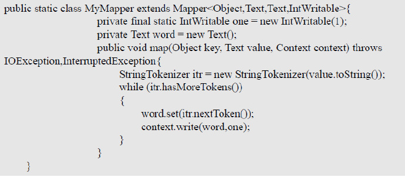
- 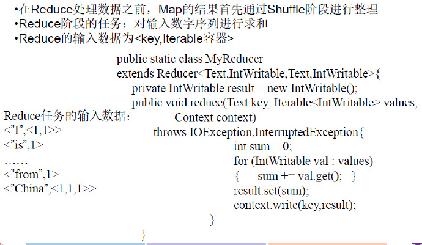
- 编写
main方法，设置环境变量，进行注册：- 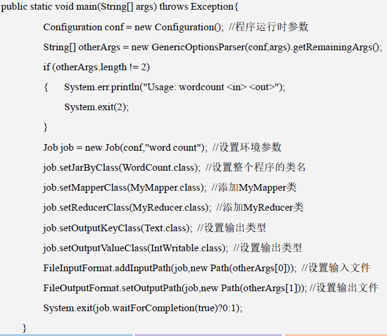
二元编程
Join
- 对于
input，来自不同的关系表，对于MapReduce而言都是文件 - 在
Map过程中，需要标记来自哪个关系表- 把来自 R的每个元组
<a,b >转换成一个键值对<b, <R,a >>，其中的键就是属性 B的值 - 把来自 S的每个元组
<b,c >，转换成一个键值对<b,<S,c>>
- 把来自 R的每个元组
Reduce过程- 具有相同 B值的元组被发送到同一个
Reduce中 - 来自 关系 R和S的、具有相同属性 B值的元组进行合并
- 输出则是连接后的元组
<a,b,c >，通常写到一个单独的输出文件中
- 具有相同 B值的元组被发送到同一个
对于二元运算，例如Join、交集、并集都差不多，首先需要标记来自哪个关系表，然后再处理。
组合式MapReduce
- 将任务划分为若干子任务，各任务之间存在依赖关系
- 多次
Join也可以认为是组合式的任务- 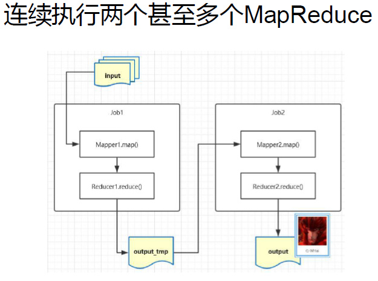
程序实现
隐式依赖描述
- 如何表示
Job之间有依赖关系- 自己编程实现：
- 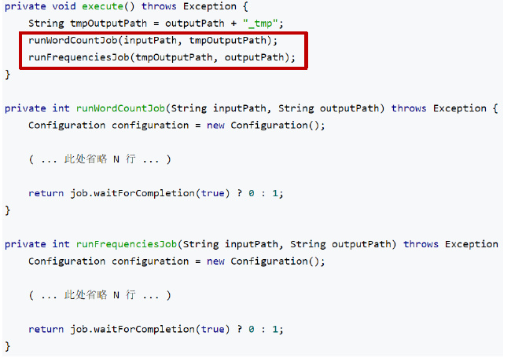
显式依赖描述
- 好处：
- 系统能拿到调度信息，避免上个程序运行失败导致后面出错
- 如果自己编程，例如
J4/J5都依赖于J3，其中J4/J5一定会有一个顺序，而如果让系统调度，可以利用调度策略效率最大化（通常短作业优先）
- 在config中实现：
- 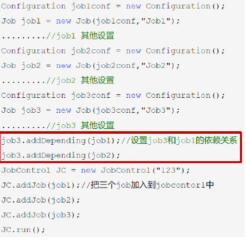
链式MapReduce
- 例子：词频统计后，过滤掉词频高于10的
WordCount程序已经写好，不能修改Map可以串很多ChainMapper，Reducer也可以串很多ChainReducer- 注意，这里的
ChainReducer为Mapper - 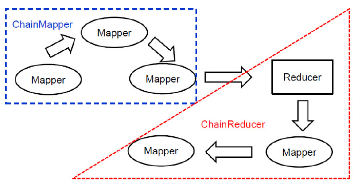
- 注意，这里的
规则
- 整个
Job只有一个Reduce- 整个框架只允许一次
Shuffle - 进行
Map不会造成数据重新排列，不会改变MapReduce整体框架
- 整个框架只允许一次
编程实现
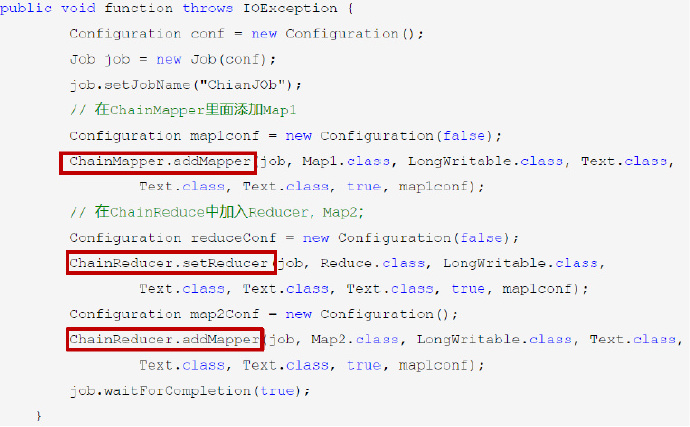
迭代MapReduce
- 许多机器学习算法都需要进行迭代（牛顿迭代、EM算法）
- 迭代式任务的特征：
- 整个任务一系列子的循环构成
- 子任务的执行操作是完全相同的
- 一个子任务的输出是下一个子任务的输入
- 一个子任务是一个MapReduce Job
- 迭代多少次，就相当于运行多少次
MapReduce - 迭代
MapReduce示意- 每一迭代结束时才将结果写入
HDFS，下一步将结果读出 - 非常浪费资源和IO
- 每一迭代结束时才将结果写入
编程
runlteration()实现一个MapReduce Job- 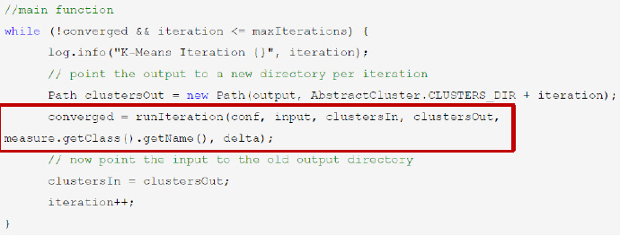
- 判断条件为满足阈值或者迭代次数
- 有时候并不关心具体的精确数值，只关心偏序关系（
PageRank）
- 有时候并不关心具体的精确数值，只关心偏序关系（
Distribute Cache
- 当表的大小差异很大时，使用
Join会导致大量的数据移动：- 编程时将
小表广播出去（每个节点上发一份，移动计算） - 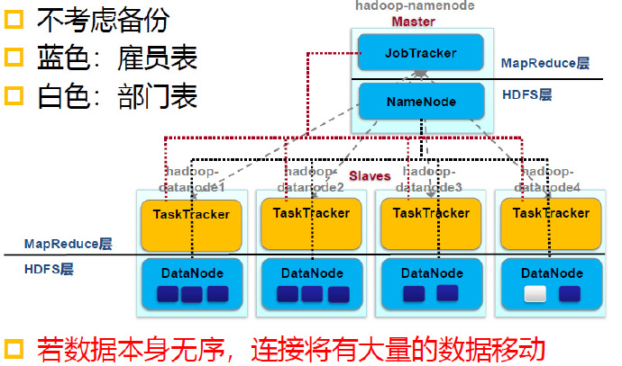
- 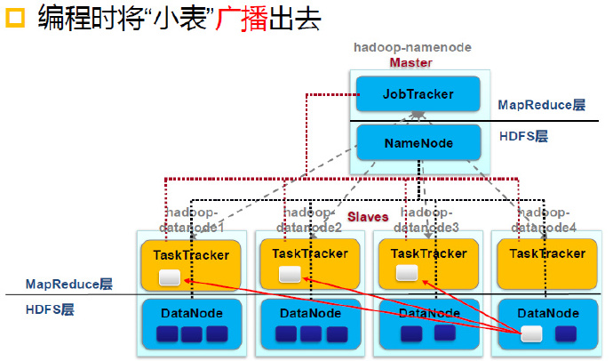
- 例如，在
Kmeans中，可以将中心点广播出去
- 编程时将
编程实现
声明
Job job= new Job(); job.addCacheFile (new Path(filename).toUri ());
使用
Path[] localPaths = context.getLocalCacheFiles();
Hadoop Streaming
Hadoop基于Java开发，但MapReduce编程不仅限于Java语言提供一个编程工具，可以允许用户使用任何可执行文件
但可能会有bug
多种语言混合编程
原理
- 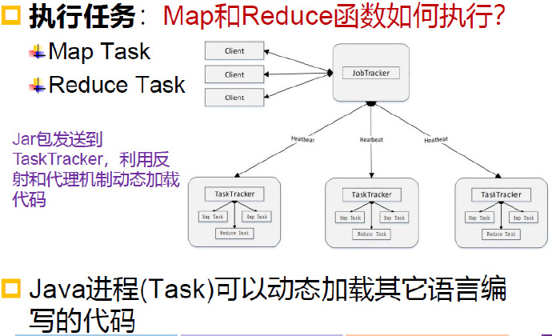